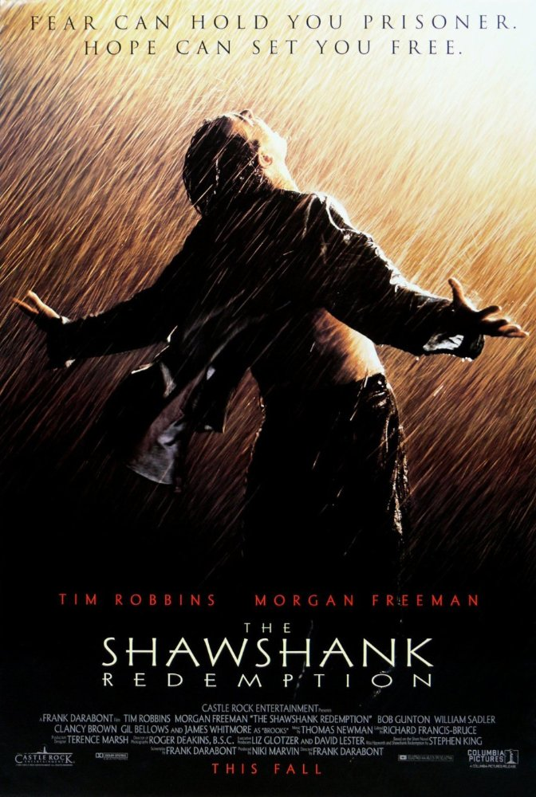

Genre: Fantasy | Drama | Mystery | Thriller | Adventure | Hrror | Romance
Release date: 2002-2011
Describtion: Rescued from the outrageous neglect of his aunt and uncle, a young boy with a great destiny proves his worth while attending Hogwarts School of Witchcraft and Wizardry. Harry ignores warnings not to return to Hogwarts, only to find the school plagued by a series of mysterious attacks and a strange voice haunting him. It's Harry's third year at Hogwarts; not only does he have a new "Defense Against the Dark Arts" teacher, but there is also trouble brewing. Convicted murderer Sirius Black has escaped the Wizards' Prison and is coming after Harry. A young wizard finds himself competing in a hazardous tournament between rival schools of magic, but he is distracted by recurring nightmares.With their warning about Lord Voldemort's return scoffed at, Harry and Dumbledore are targeted by the Wizard authorities as an authoritarian bureaucrat slowly seizes power at Hogwarts. As Harry Potter begins his sixth year at Hogwarts, he discovers an old book marked as "the property of the Half-Blood Prince" and begins to learn more about Lord Voldemort's dark past. As Harry races against time and evil to destroy the Horcruxes, he uncovers the existence of three most powerful objects in the wizarding world: the Deathly Hallows.Harry, Ron, and Hermione search for Voldemort's remaining Horcruxes in their effort to destroy the Dark Lord as the final battle rages on at Hogwarts.

Genre: Comedy | Drama | Romance
Release date: 2009
Describtion: Two friends are searching for their long lost companion. They revisit their college days and recall the memories of their friend who inspired them to think differently, even as the rest of the world called them "idiots".

Genre: Biography | Drama
Release date: 2006
Describtion: A struggling salesman takes custody of his son as he's poised to begin a life-changing professional career.

Genre: Crime | Drama
Release date: 1996
Describtion: Two imprisoned men bond over a number of years, finding solace and eventual redemption through acts of common decency.